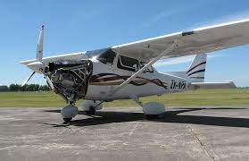
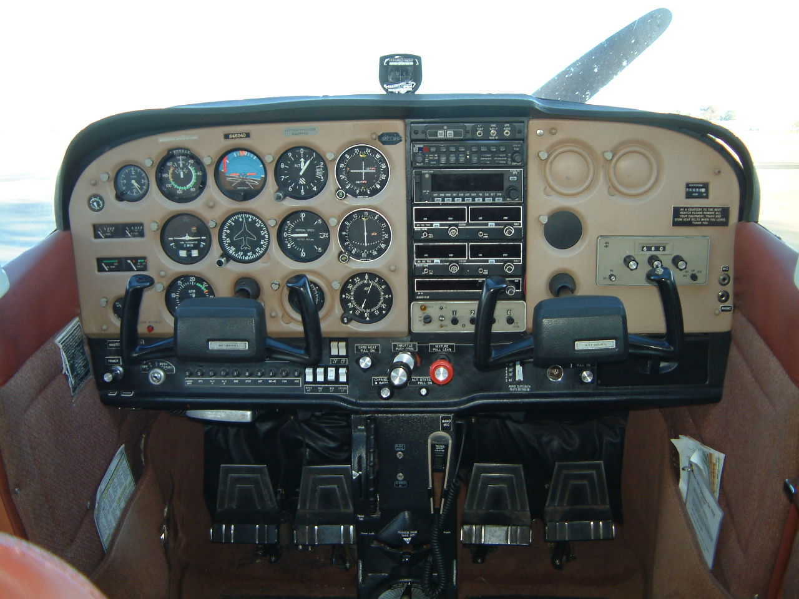

Engine-start
The pilot must next check his/her engine and instruments.

Pre-Engine Start
- Passenger Brief - Complete
- Seats & Seat Belts - Adjust & Lock
- Circuit Breakers - Not Raised
- Electrical Equipment - Off
- Avionics Switch - Off
- Fuel Tank Selector - Set to "Both"
- Brakes - Press & Hold Both Brakes
Engine Start
- Fuel Mixture - Set to Full Rich
- Carb Heat - Cold
- Fuel Prime (Cold Start Only) - 2-3 Pumps then Lock
- Throttle - 2-3 Pumps
- Throttle - Open 1/4 inch
- Master Switch - On
- Beacon - On
- Propeller Area - Confirm Clear
- Open Window - Yell "Prop Clear"
- Ignition Switch - Start
- Adjust Throttle - 800-1000 RPM
- Instrument Lights (Night) - On
- Oil Pressure - 60 to 90psi
- Ammeter - Charging
Before Taxi
- Avionics Switch - On
- Comm Radios - On
- Instrument Lights (Night)- On
- Nav Lights (Night) - On
- Flaps - Up
- AWOS/ATIS - Obtain
- Altimeter - Set (Equal to Field Elevation
- Directional Gyro - Set to Magnetic Compass
- Transponder - 1200/Standby
- Radio to GndCTAF - Request Taxi
- Land/Tax Light (Night) - On
